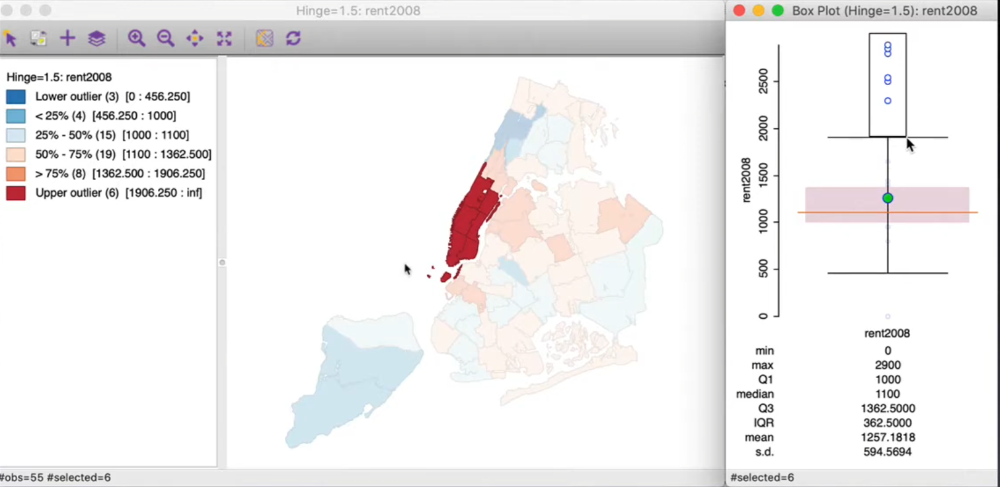
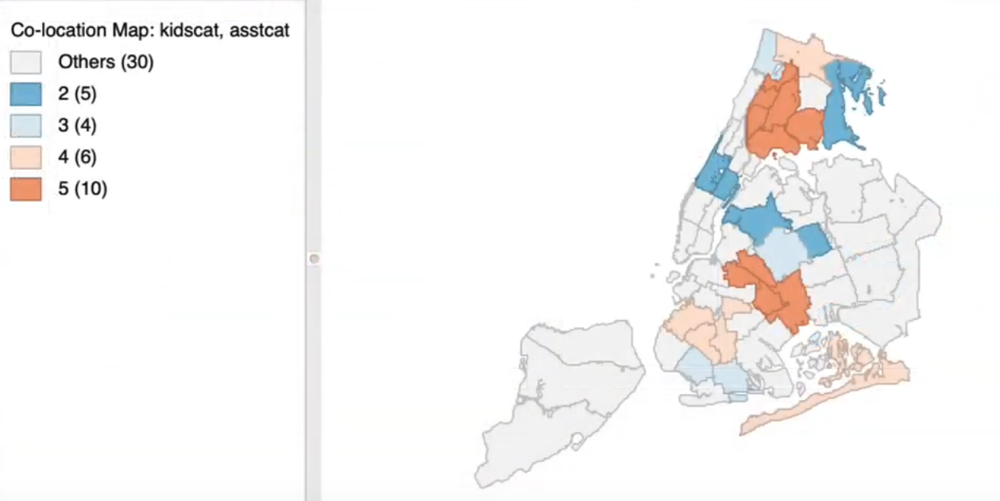

7. Maps#
7.1. Map#
Definition: a map is
a collection of spatially defined objects(Mark Monmonier)Beyond mapping
Map as analysis vs Map as presentation
Geo-visualization
Geospatial visual analytics
Exploratory spatial data analysis (
ESDA) - Luc AnselinSpatial regimes:Spatial regimesare a form ofspatial heterogeneity, which implies structural differences across space.When a variable is characterized by distinct distributions (e.g., with a different
meanorvariance) for different geographic subregions, these subregions might point to the existence ofspatial regimes.
7.1.1. Traditional Knowledge Discovery#
DeductiveapproachHypothesis first, data later
InductiveapproachData first, hypothesis later
AbductiveapproachPattern discovered along with hypothesis
Interaction between data exploration and human perception
7.2. Map Design Primer#
7.2.1. How to Lie with Maps#
Manipulate map design parameters
Scale,Symbols,Legends,Colors,Intervals
Choice of Projection
Largerareas seems more importantConformal= Preserve angleEqual area= Preserve areaEqual distant= Preserve distanceAzimuthal= preserve direction
Human Perception can be tricked
7.2.2. Choropleth Map#
Visualizing a spatial distribution
Natural BreaksVSQuantileNatural Breaksuseclusteringalgorithm (minimum the heterogeneity within classes)Natural Breakshave different number of observations per category
7.3. Continuous Statistical Maps#
7.3.1. Percentile Map#
Special form of
Quantile Map-Percentiles6 categories instead of 100 categories
< 1%, 1-10%, 10-50%, 50-90%, 90-99%, >99%
Emphasis on Extremes - Away from median
Only works well for large data sets
7.3.2. Box map plot (Luc Anselin)#
Box and whiskers plot
Identify shape of distribution and outliers
Focus on
median
Inter quartile range (
IQR)Range from 25% to 75%
Fence = 75%/25% \(+/-\) 1.5 IQR or \(+/-\) 3 IQR
Outliers= outside the fence

7.3.3. Standard Deviation Map#
Based on standardized data value
Mean= 0,standard deviation= 1
Intervals correspond to one standard deviation
Outliersare more than 2 standard deviations from the mean
7.4. Categorial Statistical Maps#
7.4.1. Co-Location Map#
Unique value map or
Categorical mapFor discrete categories
Map overlay
Map algebraMatching categories between two or more maps
Multivariate categorical association
Transfer
box plotintocategorical map(1-6)Find the overlap of the categories (rank)

7.4.2. Cartogram#
Areal unit proportional to variable of interest
Avoid misleading effect of area
Use transformed shapes
Circular cartogramandContiguous cartogram
7.4.3. Conditional Map#
Special case of
trellis/facet/conditional graphsMicro-map matrixConditioning variables on axes
Matrix of mini maps for the variable of interest conditioned by values on the axes